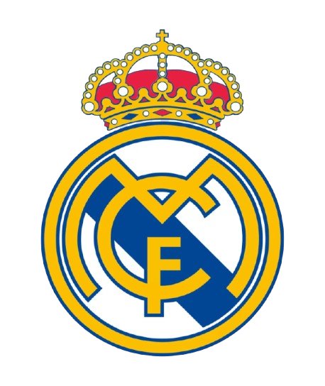
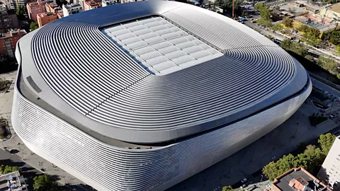
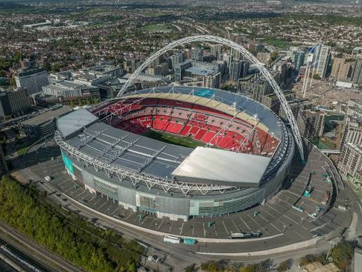
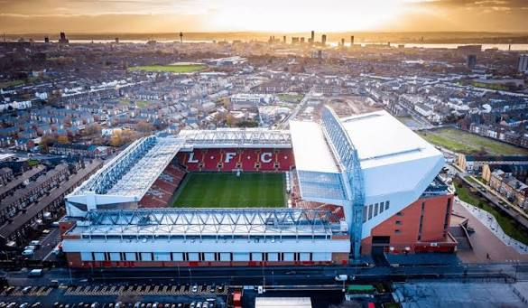
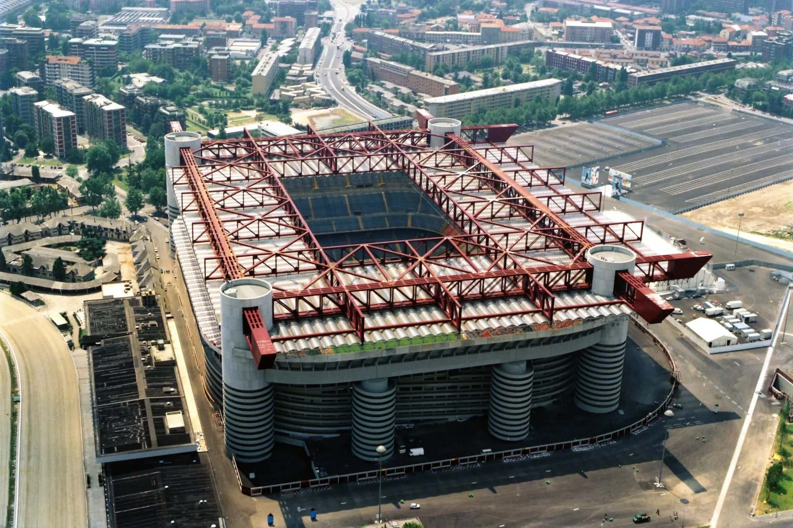
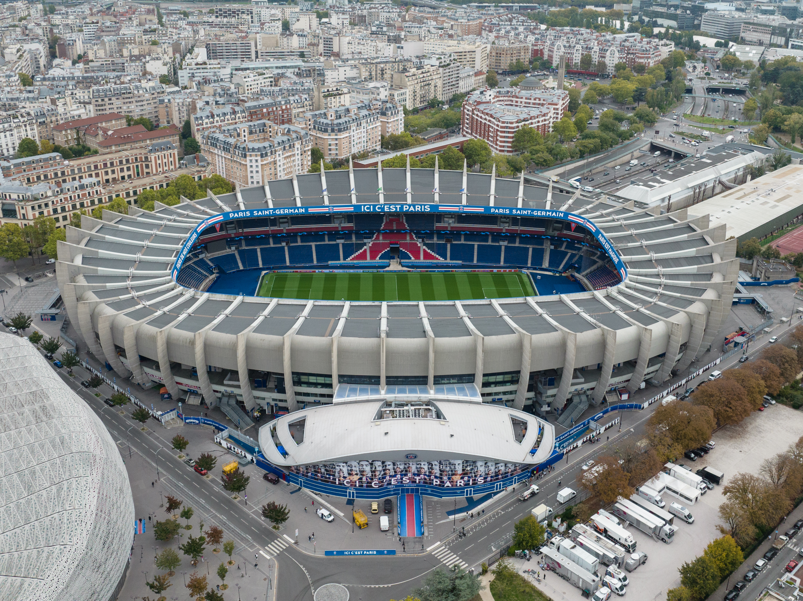
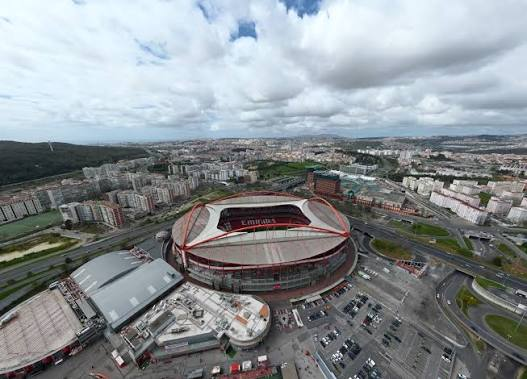
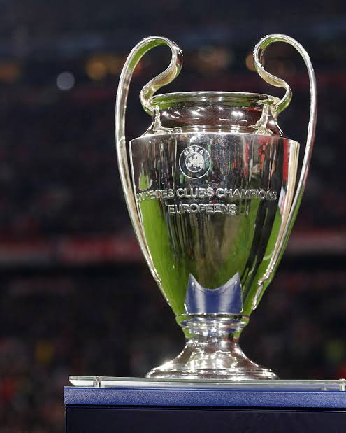

About The Champions League

The UEFA Champions League is the most prestigious club competition in European football. It features the top football clubs from various European countries, competing for the coveted Champions League trophy. Every year, the tournament captivates millions of fans worldwide, who passionately support their favorite teams. The ultimate aim for each club is to lift the iconic Champions League trophy, a symbol of footballing excellence. Renowned clubs like Real Madrid, Barcelona, Bayern Munich, Liverpool, Manchester City, and AC Milan have left an indelible mark on the competition's history. The Champions League is celebrated for its thrilling matches and unforgettable moments that define footballing greatness. Players from all corners of the globe aspire to compete in this prestigious tournament, showcasing their skills on the grandest stage. Each match is a high-stakes battle, where a single mistake can alter the course of destiny. The stadiums come alive with the fervent support of thousands of fans cheering for their beloved teams. The Champions League anthem, an iconic melody, resonates with football enthusiasts everywhere, evoking a sense of unity and passion. To achieve success, teams must demonstrate unwavering dedication, strategic teamwork, and individual brilliance. Great players utilize their skills, speed, and footballing intelligence to guide their clubs to victory. With a rich history steeped in legendary players and unforgettable matches, the Champions League continues to be the pinnacle of club football. Real Madrid holds the record for the most Champions League titles, and each season, new teams emerge with aspirations of claiming the prestigious trophy. The knockout stages are particularly exhilarating, often filled with drama and unpredictability. Some matches are decided by a solitary goal, while others extend into extra time or penalties. The Champions League final stands as one of the most significant events in the global football calendar. The coveted trophy represents not only success but also the passion, teamwork, and dedication required to excel at the highest level of club football. The UEFA Champions League remains an enduring source of inspiration for aspiring football players and devoted fans alike, solidifying its place as one of the greatest competitions in the annals of sports history.
Most Successful Clubs
The clubs with the most European Cup and Champions League titles.
Real Madrid
15 Titles
AC Milan
7 Titles
Liverpool
6 Titles
Bayern Munich
6 Titles
Barcelona
5 Titles
Top 10 Best Football Stadiums
The most iconic and beautiful stadiums in European football.

Santiago Bernabeu
Real Madrid - Spain

Camp Nou
Barcelona - Spain

Wembley Stadium
London - England

Allianz Arena
Bayern Munich - Germany

Anfield
Liverpool - England

San Siro
Milan - Italy

Signal Iduna Park
Borussia Dortmund - Germany

Old Trafford
Manchester United - England

Parc des Princes
Paris Saint-Germain - France

Estadio da Luz
Benfica - Portugal
Greatest Champions League Records
Incredible achievements and records that made football history.
Most Titles
Real Madrid
15 Titles
Most Goals
Cristiano Ronaldo
140 Goals
Most Appearances
Cristiano Ronaldo
183 Matches
Most Goals in One Season
Cristiano Ronaldo (2013–14)
17 Goals
Youngest Goalscorer
Ansu Fati
17 Years
Most Final Wins
Real Madrid
15 Titles
Fastest Goal
Roy Makaay
10.12 Seconds
Most Consecutive Titles
Real Madrid (1956–1960)
5 Titles
Most Assists
Cristiano Ronaldo
42 Assists
Biggest Final Victory
Real Madrid vs Eintracht Frankfurt (1960)
7–3
The Legendary Trophy

More than just a trophy. It represents dreams, dedication, history, and greatness.